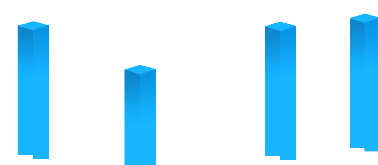
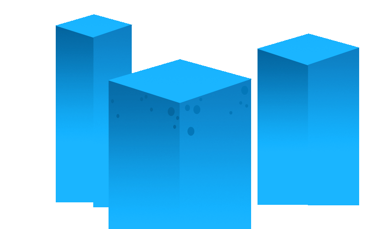
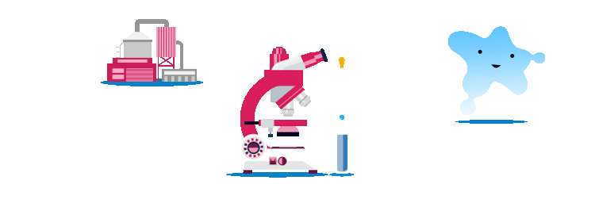

<div id="qj">
    <div class="section bg1">
        
        
        
        
        
        
        
    </div>
    <div class="section">
        <div class="slide"><h3 qj-effect="bounceIn">第二屏的第一屏</h3><h3 class="bg"></h3></div>
        <div class="slide"><h3>第二屏的第二屏</h3></div>
        <div class="slide"><h3>第二屏的第三屏辅导费</h3></div>
    </div>
    <div class="section">
        <h3>第三屏</h3>
    </div>
    <div class="section">
        <h3>第四屏</h3>
        <p>这是最后一屏</p>
    </div>
</div>